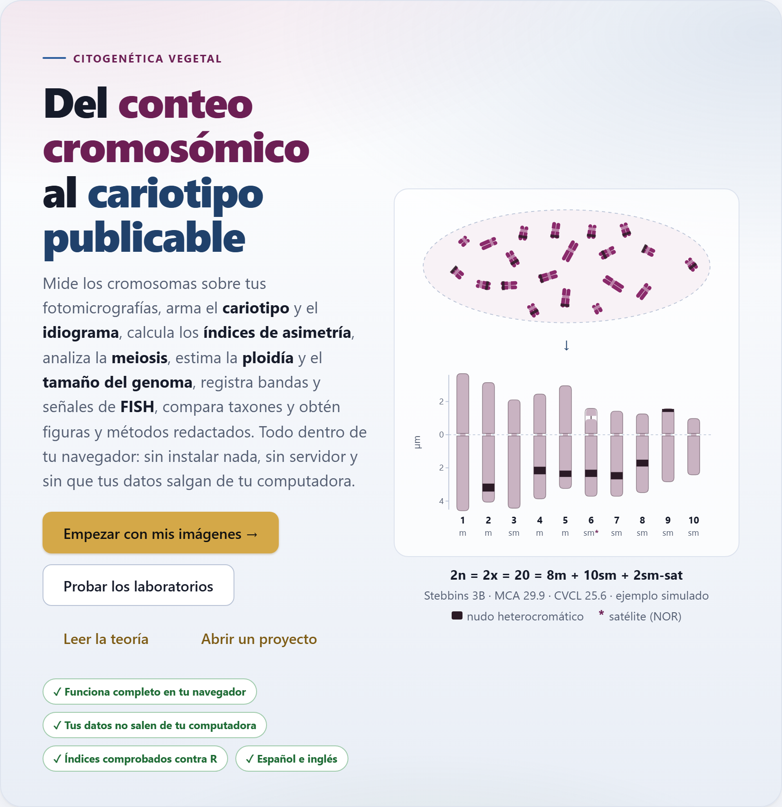
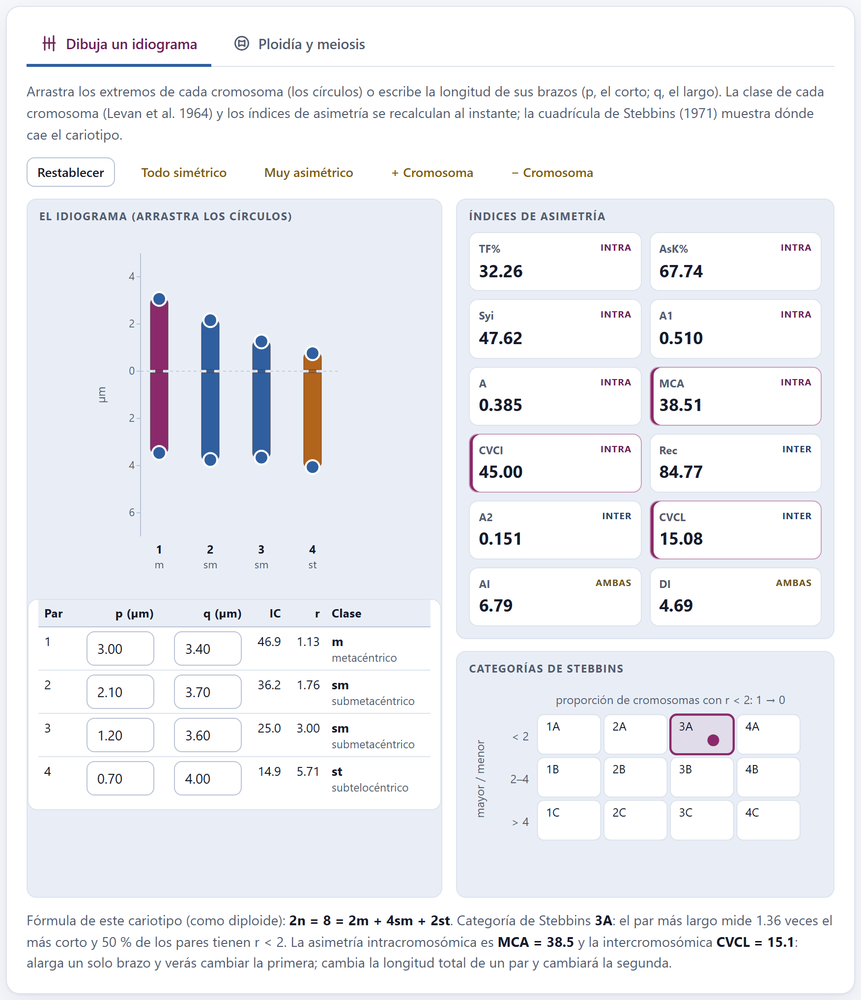
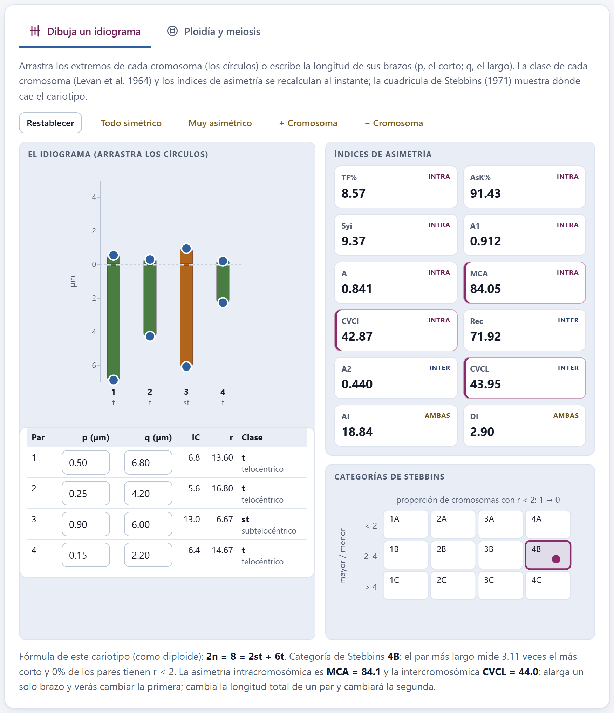
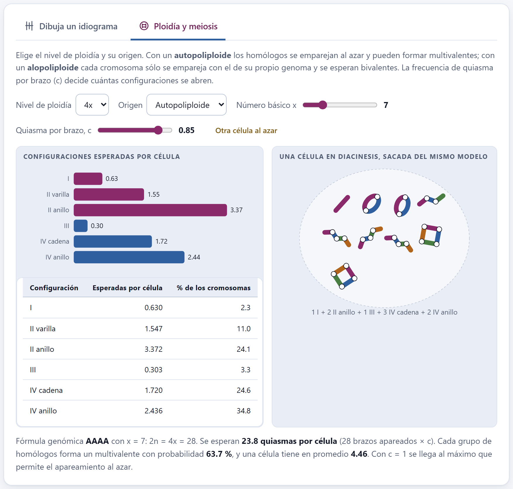
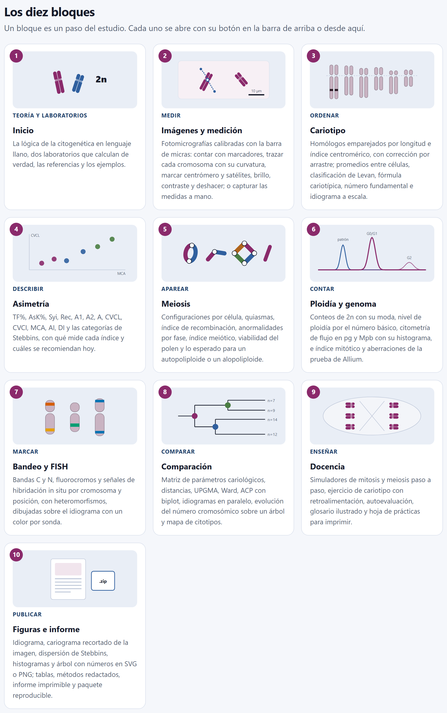
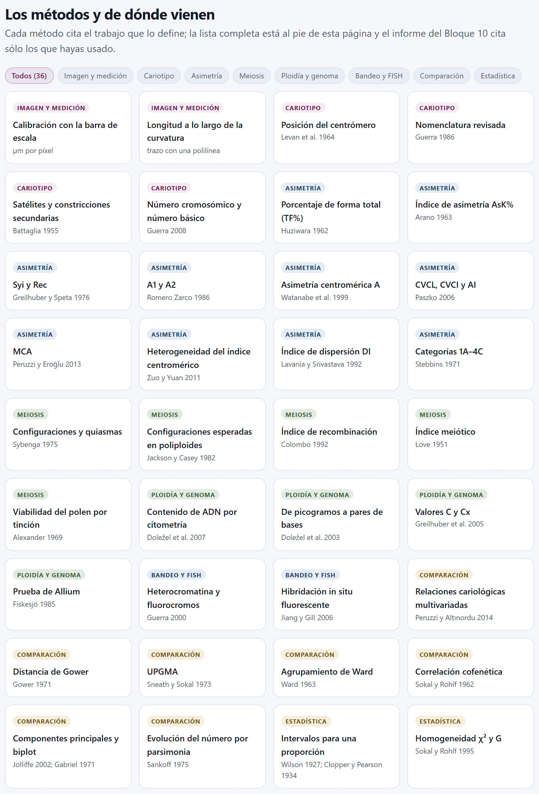
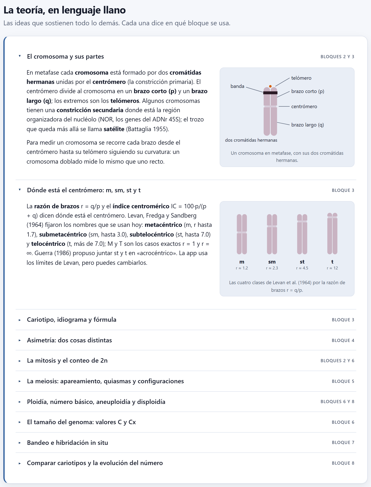
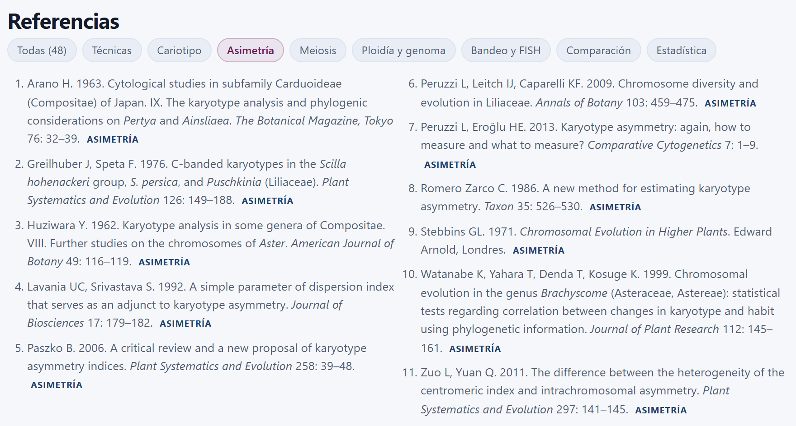
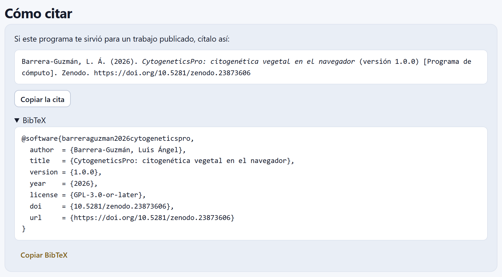

El primer bloque no pide datos: orienta. Es la portada de la app, y en una sola página reúne lo que conviene saber antes de medir el primer cromosoma: la ruta de un estudio, dos laboratorios que calculan con los mismos motores que usará la app con tus imágenes, los diez bloques y los cuatro ejemplos, los 36 métodos con el trabajo que define cada uno, la teoría en lenguaje llano, lo que el programa no hace, las 48 referencias y la cita.
Al abrir la app aparece el Bloque 1. Arriba está el lema, «Del conteo cromosómico al cariotipo publicable», con un párrafo que resume lo que hace el programa, cuatro botones para empezar y, a la derecha, una figura que no es un adorno: un idiograma calculado por la app.

La figura sale del cariotipo base del maíz de ejemplo (el mismo que generó las medidas simuladas del ejemplo Zea mays) y se dibuja con los mismos motores que el Bloque 3 y el Bloque 4. Se lee así: los diez pares van de mayor a menor; la línea punteada es el centrómero, con el brazo corto (p) arriba y el largo (q) abajo; las bandas negras son nudos heterocromáticos —siete, uno en cada par del 2 al 9 salvo el 3—, y el asterisco del par 6 marca su satélite, la región organizadora del nucléolo (NOR). Es un ejemplo simulado, y así lo dice la propia figura.
| Botón | Qué hace |
|---|---|
| Empezar con mis imágenes → | Abre el Bloque 2, donde se abren las fotomicrografías o se capturan las medidas. |
| Probar los laboratorios | Baja, en esta misma página, a la sección de los dos laboratorios (sección 1.3). |
| Leer la teoría | Baja a La teoría, en lenguaje llano (sección 1.6). |
| Abrir un proyecto | Pide un archivo .json guardado antes por la app, lo abre con sus imágenes y lleva al Bloque 2. Es lo mismo que Ctrl + O desde cualquier bloque. |
Debajo de los botones, cuatro insignias resumen sus compromisos: Funciona completo en tu navegador, Tus datos no salen de tu computadora, Índices validados contra implementaciones independientes (sección I.9) y Español e inglés.
Bajo la portada, Cómo funciona pone en una tira los siete pasos de un estudio citogenético, en el orden en que se hacen (figura I.6 de la introducción). Cada paso tiene un nombre y una línea que dice qué se hace en él:
| Paso | Nombre | En la app | Bloque |
|---|---|---|---|
| 1 | Preparar | raíces, anteras, tinción: ocurre en el laboratorio; la hoja de práctica del Bloque 9 lo explica | 9 |
| 2 | Contar | el número 2n, con marcas sobre la imagen o en la tabla de conteos | 2 6 |
| 3 | Medir | cada brazo, a escala, sobre la fotomicrografía calibrada | 2 |
| 4 | Ordenar | homólogos e idiograma | 3 |
| 5 | Describir | asimetría y fórmula; también la meiosis, la ploidía y las señales | 4 5 7 |
| 6 | Comparar | citotipos y taxones | 8 |
| 7 | Publicar | figuras, métodos, paquete | 10 |
La tira es una guía, no un trámite: puedes entrar a cualquier bloque desde la barra de la izquierda, y los que no apliquen a tu estudio se saltan.
La sección Pruébalo: dos laboratorios que calculan de verdad tiene dos pestañas. Ninguna es una animación grabada: cada cambio vuelve a calcular, con los motores del cariotipo, de la asimetría y de la meiosis, lo que la app calculará después con tus datos. Sirven para entender qué mueve cada índice antes de tener resultados propios, y en clase.
Un idiograma de cuatro pares que se modifica con el ratón: arrastra los círculos de los extremos para alargar o acortar cada brazo. También se puede escribir la longitud en la tabla de abajo, en micras (p, el brazo corto; q, el largo), o usar el teclado: con un círculo elegido, las flechas lo mueven 0.05 µm, y con Mayús, 0.5 µm. La tabla da para cada par su índice centromérico (IC), su razón de brazos (r) y su clase según Levan et al. (1964), con el nombre completo.

Los cinco botones de arriba cambian el punto de partida:
| Botón | Qué hace |
|---|---|
| Restablecer | Vuelve a los cuatro pares de partida: p = 3.00, 2.10, 1.20 y 0.70 µm con q = 3.40, 3.70, 3.60 y 4.00 µm. |
| Todo simétrico | Pone todos los pares iguales y casi metacéntricos (2.90 y 3.10 µm). |
| Muy asimétrico | Pone pares de tamaños muy distintos con el centrómero cerca de un extremo. |
| + Cromosoma · − Cromosoma | Agrega un par (de 1.50 y 2.50 µm) o quita el último. El laboratorio admite de tres a seis pares, y avisa si se pide más o menos. |
A la derecha, doce casillas dan los índices de asimetría que calcula el Bloque 4 —TF%, AsK%, Syi, A1, A, MCA, CVCI, Rec, A2, CVCL, AI y DI— y, debajo, la cuadrícula de las categorías de Stebbins (1971): las columnas van de 1 a 4 según baja la proporción de cromosomas con r < 2, y las filas de A a C según crece la razón entre el par más largo y el más corto (< 2, 2–4, > 4). Pasa el ratón sobre una casilla de índice para ver su fórmula y su referencia. El renglón del pie lo resume todo en palabras: la fórmula, la categoría con sus dos razones y los dos índices recomendados.

| Botón | Fórmula (como diploide) | Stebbins | Mayor / menor | r < 2 | MCA | CVCL |
|---|---|---|---|---|---|---|
| Restablecer | 2n = 8 = 2m + 4sm + 2st | 3A | 1.36 | 50 % | 38.5 | 15.1 |
| Todo simétrico | 2n = 8 = 8m | 1A | 1.00 | 100 % | 3.3 | 0.0 |
| Muy asimétrico | 2n = 8 = 2st + 6t | 4B | 3.11 | 0 % | 84.1 | 44.0 |
Pulsa Todo simétrico: MCA = 3.3 y CVCL = 0.0, categoría 1A. Ahora arrastra hacia abajo sólo el extremo del brazo largo del par 1: MCA sube (el centrómero de ese par se aleja del centro) y CVCL también sube (ese par ya es más largo que los demás). Regresa y cambia en cambio los dos brazos del par 1 en la misma proporción: CVCL sube, pero MCA no cambia, porque la posición relativa del centrómero de ese par es la misma. Por eso se recomienda describir la asimetría con dos números y no con uno (Peruzzi y Eroğlu, 2013); el capítulo 4 lo explica a fondo.
La segunda pestaña muestra qué configuraciones meióticas se esperan en un poliploide según su origen. En un autopoliploide los homólogos se emparejan al azar y pueden formar multivalentes; en un alopoliploide cada cromosoma sólo se empareja con el de su propio genoma, y se esperan bivalentes.

Los controles de la pestaña son:
Con los valores de partida la app escribe al pie: 2n = 4x = 28; se esperan 23.8 quiasmas por célula (28 brazos apareados × c), y cada grupo de cuatro homólogos forma un multivalente con probabilidad 63.7 %, de modo que una célula tiene en promedio 4.46 multivalentes. Cambia el origen a Alopoliploide y la fórmula pasa a AABB: los quiasmas esperados son los mismos, pero desaparecen los multivalentes —sólo quedan 0.630 univalentes, 3.570 bivalentes en varilla y 10.115 en anillo por célula—. Sube c a 1 y verás el máximo de multivalentes que permite el apareamiento al azar.
El modelo sigue a Jackson y Casey (1982): los homólogos de cada grupo se aparean al azar por brazos, y cada brazo apareado forma un quiasma con probabilidad c. Un bivalente con quiasma en los dos brazos es un anillo; con uno solo, una varilla; un cromosoma sin quiasma queda como univalente. Es el mismo modelo con el que el Bloque 5 compara tus configuraciones observadas con lo esperado para cada origen.
Los diez bloques presenta cada bloque en una tarjeta con su número, un dibujo hecho por la app, el verbo del paso que cubre (Medir, Ordenar, Describir…), su nombre y lo que hace. Un clic en la tarjeta abre el bloque; es lo mismo que elegirlo en la barra de la izquierda.

Más abajo, Ejemplos incluidos ofrece los cuatro conjuntos de datos simulados que se describen en la sección I.7 (figura I.5). Cada tarjeta dice en qué bloques se usa su ejemplo, y el botón Abrir el ejemplo lo carga y lleva al bloque donde empieza: el maíz al Bloque 2, el chayote al 3, la serie poliploide al 5 y la prueba de Allium al 6.
Un ejemplo no se suma a tus datos: los sustituye. Si ya hay datos en la app, te pregunta antes de seguir. Guarda tu proyecto con Ctrl + S si quieres volver a él.
La sección Los métodos y de dónde vienen pone en fichas los 36 métodos que calcula la app, cada una con su familia, su nombre y el trabajo que lo define. Los botones de arriba filtran por familia; Todos (36) los vuelve a mostrar.

| Familia | Fichas | Métodos y fuente |
|---|---|---|
| Imagen y medición | 2 | Calibración con la barra de escala (µm por píxel); longitud a lo largo de la curvatura (trazo con una polilínea) |
| Cariotipo | 4 | Posición del centrómero (Levan et al., 1964); nomenclatura revisada (Guerra, 1986); satélites (Battaglia, 1955); número cromosómico y número básico (Guerra, 2008) |
| Asimetría | 10 | TF% (Huziwara, 1962); AsK% (Arano, 1963); Syi y Rec (Greilhuber y Speta, 1976); A1 y A2 (Romero Zarco, 1986); A (Watanabe et al., 1999); CVCL, CVCI y AI (Paszko, 2006); MCA (Peruzzi y Eroğlu, 2013); heterogeneidad del índice centromérico (Zuo y Yuan, 2011); DI (Lavania y Srivastava, 1992); categorías 1A–4C (Stebbins, 1971) |
| Meiosis | 5 | Configuraciones y quiasmas (Sybenga, 1975); configuraciones esperadas en poliploides (Jackson y Casey, 1982); índice de recombinación (Colombo, 1992); índice meiótico (Love, 1951); viabilidad del polen (Alexander, 1969) |
| Ploidía y genoma | 4 | Contenido de ADN por citometría (Doležel et al., 2007); de picogramos a pares de bases (Doležel et al., 2003); valores C y Cx (Greilhuber et al., 2005); prueba de Allium (Fiskesjö, 1985) |
| Bandeo y FISH | 2 | Heterocromatina y fluorocromos (Guerra, 2000); hibridación in situ fluorescente (Jiang y Gill, 2006) |
| Comparación | 7 | Relaciones cariológicas multivariadas (Peruzzi y Altınordu, 2014); distancia de Gower (Gower, 1971); UPGMA (Sneath y Sokal, 1973); Ward (Ward, 1963); correlación cofenética (Sokal y Rohlf, 1962); componentes principales y biplot (Jolliffe, 2002; Gabriel, 1971); evolución del número por parsimonia (Sankoff, 1975) |
| Estadística | 2 | Intervalos para una proporción (Wilson, 1927; Clopper y Pearson, 1934); homogeneidad χ² y G (Sokal y Rohlf, 1995) |
Esta lista es el catálogo completo. El informe y los métodos redactados del Bloque 10, en cambio, citan sólo los métodos que tu proyecto usó.
La teoría, en lenguaje llano reúne en diez temas desplegables las ideas que sostienen el resto de la app. Cada tema dice a la derecha en qué bloque se usa, y cinco de ellos llevan un dibujo hecho por la app. El primero aparece abierto; un clic en el título abre o cierra cualquiera.

| # | Tema | Bloque | La idea, en una línea |
|---|---|---|---|
| 1 | El cromosoma y sus partes | 2 3 | Cromátidas, centrómero, brazos p y q, telómeros, constricción secundaria y satélite; un brazo se mide siguiendo su curvatura. |
| 2 | Dónde está el centrómero: m, sm, st y t | 3 | r = q/p e IC = 100·p/(p + q) dan la clase; los límites de Levan son 1.7, 3.0 y 7.0. |
| 3 | Cariotipo, idiograma y fórmula | 3 | Promedios de varias células, longitud relativa, fórmula cariotípica y número fundamental. |
| 4 | Asimetría: dos cosas distintas | 4 | La intracromosómica (centrómeros) y la intercromosómica (longitudes); MCA, CVCL y CVCI. |
| 5 | La mitosis y el conteo de 2n | 2 6 | Pretratamiento, fijación, hidrólisis, tinción y aplastado; la moda de varias células; índice mitótico. |
| 6 | La meiosis: apareamiento, quiasmas y configuraciones | 5 | Bivalentes en anillo o en varilla, univalentes, multivalentes; índice de recombinación e índice meiótico. |
| 7 | Ploidía, número básico, aneuploidía y disploidía | 6 8 | x, nivel de ploidía y serie euploide; ganar cromosomas sueltos no es lo mismo que cambiar x. |
| 8 | El tamaño del genoma: valores C y Cx | 6 | 2C, 1C y 1Cx; el patrón interno de la citometría; 1 pg = 978 Mpb. |
| 9 | Bandeo e hibridación in situ | 7 | Bandas C, CMA⁺ y DAPI⁺; ADNr 5S y 45S, telómeros y GISH; cada señal por cromosoma, brazo y posición. |
| 10 | Comparar cariotipos y la evolución del número | 8 | Una matriz de parámetros, métodos multivariados y la parsimonia sobre un árbol. |
| Si r ≤ 1.7 | entonces metacéntrico (m); M si r = 1 exactamente. |
| Si 1.7 < r ≤ 3.0 | entonces submetacéntrico (sm). |
| Si 3.0 < r ≤ 7.0 | entonces subtelocéntrico (st). |
| Si r > 7.0 | entonces telocéntrico (t); T si no hay brazo corto (r = ∞). |
Son los límites que usan por omisión los laboratorios y el Bloque 3; allí se pueden cambiar por los de Guerra (1986) o por unos propios.
La portada termina con tres secciones prácticas. La primera, Lo que este programa no hace, nombra cuatro límites, que la sección I.10 de la introducción explica con más detalle:
Referencias da las 48 obras que cita la app, en orden alfabético, cada una con su tema. Los botones de arriba filtran por tema; la numeración se rehace con lo que queda a la vista. Son las mismas que reúne el apéndice F de este manual.
| Tema | Obras | Tema | Obras |
|---|---|---|---|
| Técnicas | 4 | Ploidía y genoma | 5 |
| Cariotipo | 5 | Bandeo y FISH | 3 |
| Asimetría | 11 | Comparación | 10 |
| Meiosis | 5 | Estadística | 5 |

Si la app te sirvió para un trabajo publicado, Cómo citar da la cita lista para copiar con Copiar la cita, y al desplegar BibTeX, la misma cita como registro para un gestor de referencias, con Copiar BibTeX. La versión sale del propio programa, así que siempre coincide con la que usaste. La cita lleva el DOI de concepto de Zenodo, 10.5281/zenodo.23873606, que lleva siempre a la versión más reciente.

Citar el programa no sustituye citar los métodos. Si publicas MCA y CVCL, cita a Peruzzi y Eroğlu (2013) y a Paszko (2006); si publicas la categoría de Stebbins, a Stebbins (1971). Los métodos redactados del Bloque 10 ya traen esas citas, sólo las de lo que usaste.
| Si tienes fotomicrografías de metafases | entonces Empezar con mis imágenes → y el capítulo 2. |
| Si ya tienes las medidas de los brazos | entonces Bloque 2, Pegar medidas (sección 2.6), y después el Bloque 3. |
| Si tienes un proyecto guardado | entonces Abrir un proyecto o Ctrl + O. |
| Si sólo quieres ver cómo funciona | entonces un ejemplo de Ejemplos incluidos, o los laboratorios. |
| Si vas a enseñar | entonces los laboratorios de esta página y el Bloque 9. |
El laboratorio no deja agregar ni quitar pares. Admite de tres a seis; fuera de ese intervalo la app avisa y no cambia nada. La fórmula propia no calcula. Admite hasta ocho genomas (ocho letras); con más, el pie lo dice. Abrir un proyecto no hace nada. El archivo debe ser un .json guardado por la app; si no lo es, aparece un aviso con el motivo.